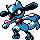

#403
Riolu
Fighting
Abilities: Steadfast, Inner Focus, Prankster
Base stats BST 285
HP40
Attack70
Defense40
Speed60
Sp. Atk35
Sp. Def40
Evolution
dbbw EVOLVE_HAPPINESS, TR_MORNDAY, LUCARIOLevel-up learnset
LevelMoveType
Lv. 1Quick AttackNormal
Lv. 1Low KickFighting
Lv. 1ForesightNormal
Lv. 1EndureNormal
Lv. 4BiteDark
Lv. 7CounterFighting
Lv. 8Metal ClawSteel
Lv. 19ScreechNormal
Lv. 20Rock SmashFighting
Lv. 22ReversalFighting
Lv. 25CrunchDark
Lv. 26Aura SphereFighting
Lv. 28Nasty PlotDark
Lv. 31Cross ChopFighting
Lv. 40Swords DanceNormal